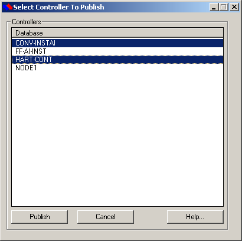
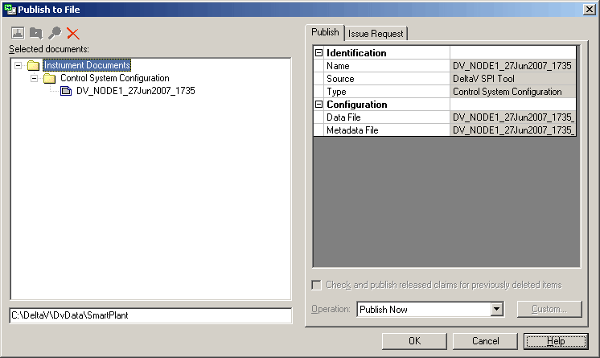

Publish data to SPI
If you have a controller configuration in the DeltaV database you want to work with in SmartPlant Instrumentation, use the Publish Data to SPI menu option to open the Select Controller To Publish dialog.

In the dialog, select one or more controllers, and then click Publish.
If there are items in the DeltaV configuration that are not compatible with SPI, a warning message appears that lists the items and includes the location and name of the log file for this instance of publishing this controller.
Controller publish log files are overwritten each time a controller is published.
Click OK on the warning dialog to continue.
The Publish to File dialog opens for the first controller in the list that has been selected.

If the entry field in the lower left corner of the dialog is empty, the OK button is grayed out. Enter a directory in which to save the published xml file, then click OK.
A Publishing progress dialog appears. When publishing is complete, a Publish dialog appears, indicating success. Click Close to close the dialog.
If you have selected more than one controller, the Publish to File dialog for the next controller appears.
To see the changes in the Excel workbook after you publish information to SPI, you must reload the affected controllers using the Data Manager dialog in the SPI Excel Add-in.
Published file names are in the form DV_Controller_name_WeekdayYYYY_HHMM_Data.xml. For example, DV_CONV-INSTAI_Thrsd2007_0932_Data.xml